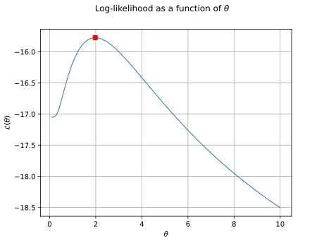

Note
Go to the end to download the full example code.
Gaussian process regression: draw the likelihood¶
Abstract¶
In this short example we draw the log-likelihood as a function of the scale parameter of a covariance model. Refer to Gaussian process regression.
import openturns as ot
import openturns.viewer as otv
We define the exact model with a SymbolicFunction :
f = ot.SymbolicFunction(["x"], ["x*sin(x)"])
We use the following input and output training samples :
inputSample = ot.Sample([[1.0], [3.0], [5.0], [6.0], [7.0], [8.0]])
outputSample = f(inputSample)
We choose a constant basis for the trend of the metamodel :
basis = ot.ConstantBasisFactory().build()
covarianceModel = ot.SquaredExponential(1)
For the covariance model, we use a Matern model with ![\nu = 1.5]() :
:
covarianceModel = ot.MaternModel([1.0], 1.5)
We are now ready to fit the Gaussian Process parameters and store the result :
fitter = ot.GaussianProcessFitter(inputSample, outputSample, covarianceModel, basis)
fitter.run()
fitter_result = fitter.getResult()
We can retrieve the covariance model from the result object and then access the scale of the model :
theta = fitter_result.getCovarianceModel().getScale()
print("Scale of the covariance model : %.3e" % theta[0])
Scale of the covariance model : 1.978e+00
This hyperparameter is calibrated thanks to a maximization of the log-likelihood. We get this log-likehood as a function of ![\theta]() :
:
ot.ResourceMap.SetAsBool("GaussianProcessFitter-UseAnalyticalAmplitudeEstimate", True)
reducedLogLikelihoodFunction = fitter.getReducedLogLikelihoodFunction()
We draw the reduced log-likelihood ![\mathcal{L}(\theta)]() as a function
of the parameter .
as a function
of the parameter .
graph = reducedLogLikelihoodFunction.draw(0.1, 10.0, 100)
graph.setXTitle(r"$\theta$")
graph.setYTitle(r"$\mathcal{L}(\theta)$")
graph.setTitle(r"Log-likelihood as a function of $\theta$")
We represent the estimated parameter as a point on the log-likelihood curve :
L_theta = reducedLogLikelihoodFunction(theta)
cloud = ot.Cloud(theta, L_theta)
cloud.setColor("red")
cloud.setPointStyle("fsquare")
graph.add(cloud)
graph.setLegends([r"Matern $\nu = 1.5$", r"$\theta$ estimate"])
We verify on the previous graph that the estimate of maximizes
the log-likelihood.
Display figures
view = otv.View(graph)
otv.View.ShowAll()
